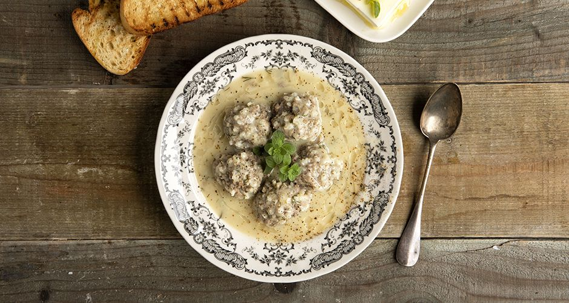

Giouvarlakia Avgolemono
Back Home

Description
Giouvarlakia with egg and lemon or without egg. We all love this delicious homemade treat. Giouvarlakia are made in many ways. Egg-lemon soup, without egg, or fried. All the secrets about them are here young men! Follow my recipe step by step and you will remember me.
Ingredients
- 500 g minced beef
- 1 egg
- 1 medium dry onion (grated or very finely chopped)
- 1 carrot, finely grated
- 1/4 cup olive oil
- 1/4 cup Carolina or glazed rice
- 2 tbsp chopped dill
- 2 tbsp chopped parsley
- Salt
- Freshly ground pepper
For the Soup
- 4 tbsp olive oil
- 1 carrot, cut into small squares
- 1 small celery root, cut into small squares (300 g)
- 1 potato, cut into small squares
- 1 leek, chopped
- 1½ liters of hot water
- 2 eggs
- 2 medium lemons
- 1 tbsp cornflour
- A little chopped dill
- Freshly ground pepper
Steps
- Prepare the rice by putting it in a bowl and covering it with plenty of water.
- We let it soak until we prepare the rest of the ingredients, and before using it, we rinse it well and drain it.
- In a bowl, place the minced meat, egg, prepared rice, onion, carrot, olive oil, herbs, salt and pepper.
- Knead the ingredients very well until the minced meat changes color and turns white.
- We form small balls the size of a walnut and arrange them on a tray.
The soup
- Clean and cut all the vegetables into small, evenly sized squares with a knife.
- Heat the olive oil in a saucepan and sauté the vegetables for 2-3 minutes.
- Add the water and let it boil.
- We add all the yuvarlakia, salt and cover the food.
- Lower the heat and simmer for 25-30 minutes.
- Check the salt and pepper at the end of boiling.
- Lower the heat to 1 and wait for the boiling to subside.
The sauce
- In a bowl, dissolve the lemon juice with the cornstarch.
- In another bowl, beat the egg whites with a wire whisk until they form soft peaks.
- Add the yolks and continue beating.
- If you are going to reheat the food (always over very low heat), cornstarch is essential so that the egg and lemon mixture doesn't curdle .